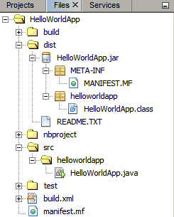

Apache NetBeans
Apache NetBeansLatest release
Tutorial para Início Rápido do Java do NetBeans IDE
| This tutorial needs a review. You can open a JIRA issue, or edit it in GitHub following these contribution guidelines. |
Bem-vindo ao NetBeans IDE!
Este tutorial oferece uma introdução simples e rápida ao fluxo de trabalho do NetBeans IDE, orientando você na criação de uma aplicação de console simples do "Hello World" de Java. Após concluir este tutorial, você terá adquirido um conhecimento geral sobre como criar e executar aplicações no IDE.
Este tutorial leva menos de 10 minutos para ser concluído.
Depois que você finalizar este tutorial, poderá acessar as trilhas de aprendizado por meio da página Documentação, Treinamento e Suporte. As trilhas de aprendizado oferecem tutoriais abrangentes que realçam uma ampla gama de funcionalidades do IDE e técnicas de programação para uma variedade de tipos de aplicações. Se não desejar criar uma aplicação "Hello World", é possível ignorar este tutorial e ir direito para as trilhas de aprendizado.

Figure 1. O conteúdo desta página se aplica ao NetBeans IDE 7.2 e versões posteriores
Para concluir este tutorial, você precisa dos seguintes recursos e softwares.
| Software ou Recurso | Versão Necessária |
|---|---|
versão 7.2, 7.3, 7.4 ou 8.0 |
|
versão 6, 7 ou 8 |
Configurando o Projeto
Para criar um projeto do IDE:
-
Inicie o NetBeans IDE.
-
No IDE, escolha Arquivo > Novo Projeto, como mostrado na figura abaixo.

-
No assistente Novo Projeto, expanda a categoria Java e selecione Aplicação Java, como mostrado na figura abaixo. Em seguida, clique em Próximo.
-
Na página Nome e Localização do assistente, adote o procedimento a seguir (como mostrado na figura abaixo):
-
no campo Nome do Projeto, digite
HelloWorldApp. -
Deixe desmarcada a caixa de seleção Utilizar Pasta Dedicada para Armazenar Bibliotecas.
-
No campo Criar Classe Principal, digite
helloworldapp.HelloWorldApp.
-

-
Clique em Finalizar.
O projeto é criado e aberto no IDE. Agora você deve ver os seguintes componentes:
-
A janela Projetos, que contém uma view em árvore dos componentes do projeto, incluindo arquivos de código-fonte, bibliotecas de que seu código depende, e assim por diante.
-
A janela Editor de Código-fonte com um arquivo chamado
HelloWorldAppé aberta. -
A janela Navegador, que você pode utilizar para navegar rapidamente entre elementos dentro da classe selecionada.

Adicionando Código ao Arquivo de Origem Gerado
Como a caixa de seleção Criar Classe Principal foi marcada no assistente de Novo Projeto, o IDE criou uma classe principal de esqueleto. Você pode adicionar a mensagem "Hello World!" ao código de esqueleto substituindo a linha:
// TODO code application logic herepela linha:
System.out.println("Hello World!");Salve a alteração escolhendo Arquivo > Salvar.
O arquivo deve ter uma aparência semelhante à seguinte amostra de código.
/*
* To change this template, choose Tools | Templates
* and open the template in the editor.
*/
package helloworldapp;
/**
*
* @author <your name>
*/
public class HelloWorldApp {
/**
* @param args the command line arguments
*/
public static void main(String[] args) {
System.out.println("Hello World!");
}
}Compilando e Executando o Programa
Devido à funcionalidade Compilar ao Salvar do IDE, não é necessário compilar manualmente o projeto para que seja executado no IDE. Quando um arquivo de código-fonte Java é salvo, ele é compilado automaticamente pelo IDE.
A funcionalidade Compilar ao Salvar pode ser desativado na janela Propriedades do Projeto. Clique com o botão direito do mouse no projeto e selecione Propriedades. Na janela Propriedades, escolha a guia Compilação. A caixa de seleção Compilar ao Salvar está na parte superior. Observe que, na janela Propriedades do Projeto, é possível configurar várias definições para o projeto: bibliotecas do projeto, encapsulamento, construção, execução, etc.
Para executar o programa:
-
Escolha Executar > Executar Projeto.
A figura abaixo mostra o que você deve ver agora.

Parabéns! Seu programa funciona!
Se houver erros de compilação, eles são marcados com glifos vermelhos nas margens esquerda e direita do Editor de Código-fonte. Os glifos da margem esquerda indicam os erros das linhas correspondentes. Os glifos da margem direita mostram todas as áreas do arquivo que apresentam erros, incluindo os erros das linhas que não estão visíveis. É possível passar o mouse sobre a marca do erro para ver a descrição deste erro. É possível clicar em um glifo da margem direita para ir para a linha que apresenta o erro.
Construindo e Implantando a Aplicação
Depois de escrever e executar o teste da aplicação, você pode utilizar o comando Limpar e Construir para construir a aplicação para implantação. Quando o comando Limpar e Construir é utilizado, o IDE executa um script de construção que realiza as seguintes tarefas:
-
Deleta os arquivos compilados anteriormente e outras saídas de construção.
-
Recompila a aplicação e constrói um arquivo JAR que contém arquivos compilados.
Para construir sua aplicação:
-
Escolha Executar > Limpar e Construir Projeto.
É possível exibir as saídas de construção abrindo a janela Arquivos e expandindo o nó HelloWorldApp . O arquivo bytecode compilado HelloWorldApp.class está no subnó build/classes/helloworldapp. O arquivo JAR implantável que contém o HelloWorldApp.class está no nó dist.

Agora você sabe como executar algumas das tarefas de programação mais comuns no IDE.
Para obter informações sobre como executar a aplicação da linha de comando, consulte o capítulo Iniciando a Aplicação Java do tutorial Empacotando e Distribuindo Aplicações Java.
Consulte Também
Para obter informações sobre como criar e trabalhar com projetos Java padrão e de formato livre, consulte Criando Projetos Java em Desenvolvendo Aplicações com o NetBeans IDE.
Para saber mais sobre o fluxo de trabalho do IDE para o desenvolvimento de aplicações Java, incluindo o gerenciamento de classpath, consulte Desenvolvendo Aplicações Java Gerais.
Para obter instruções detalhadas sobre como compilar e executar uma aplicação "Hello World!" simples no seu sistema operacional, consulte a lição The "Hello World" Application dos Tutoriais Java.
Para localizar informações específicas do tipo de aplicações que você está desenvolvendo, use a trilha de aprendizado do NetBeans IDE para aquele tipo de aplicação. Cada trilha do aprendizado contém uma série de tutoriais e guias que variam em escopo do básico ao avançado. As seguintes trilhas do aprendizado estão disponíveis:

{kind=link}